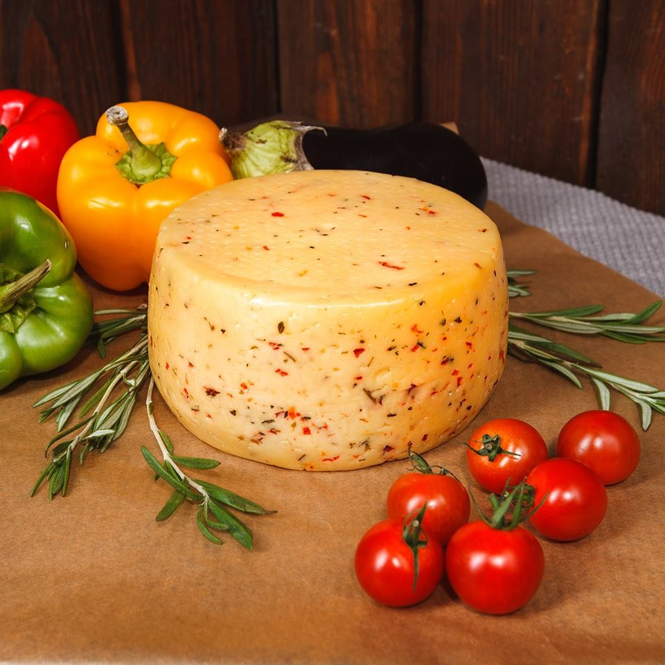

СодержаниеПо внешнему виду сыры делятся на свежие, мягкие с нежной корочкой (с белой плесенью), мягкие с мытой корочкой, сыры с голубой плесенью (голубой сыр), прессованные и варёно-прессованные. Другие виды сыра — сывороточно-альбуминные, альбуминные, плавленые, а также попадающие под несколько категорий. Редкие виды сыров — немецкий сыр из кислого молока и норвежский коричневый сыр (брюнуст).
Сычужные сырыСычужный фермент (реннин, он же химозин) — пищеварительный фермент животного происхождения, который выделяли из желудков телят (после убоя). Возраст таких телят обычно не более 10 дней. Сычужный фермент используется для створаживания молока и приготовления сыров.
С развитием генной инженерии стало возможным извлечь из животных гены, ответственные за производство химозина, и вставить их в некоторые бактерии, грибы или дрожжи, чтобы они производили химозин во время ферментации[5][6]. Генетически модифицированные микроорганизмы прекращают своё существование после ферментации, а химозин выделяют из культуральной жидкости, по этой причине сыр не содержит какого-либо компонента или ингредиента ГМО[7] . Продукты на основе рекомбинантного химозина (Fermentation-Produced Chymosin, FPC) присутствуют на рынке с 1990 года. За следующие 20 лет они стали восприниматься как идеально подходящие ферменты для свёртывания молока[8]. К 1999 г. около 60 % твёрдых сыров в США[9] и до 80 % во всём мире[10] было произведено с использованием рекомбинантного химозина.
В зависимости от метода выработки, среди сычужных сыров можно выделить твёрдые, мягкие и рассольные.По технологии производства сыры подразделяются на твёрдые, мягкие, рассольные и переработанные (плавленые).
По твёрдости сыры делятся на свежие, мягкие, полутвёрдые нарезные, твёрдые нарезные и твёрдые.Пармезан — самый известный и всемирно популярный итальянский сорт твёрдого сыра долгого созревания. Массовая доля жира — 32 %. типа Швейцарского — сыры цилиндрической формы, имеют большие глазки округлой формы, сладковато-пряный вкус; массовая доля жира — 50 % на сухое вещество (Швейцарский, Советский, Алтайский, Московский); типа Голландского — сыры округлой сплюснутой, овальной формы, имеют мелкие глазки, острый, слегка кисловатый вкус; массовая доля жира — 45 % на сухое вещество (Костромской, Ярославский, Голландский); типа горного тёрочного — употребляемый в тёртом виде, используется в качестве приправы ( Кавказский ); типа чеддера — имеет форму цилиндра, глазки отсутствуют, консистенция мягкая; массовая доля жира — 50 %, слегка кисловатый вкус (чеддер, чёрный Алтай); типа Российского — цилиндрическая форма, нежная консистенция, массовая доля жира — 50 % (Российский); копчёные сыры — массовая доля жира — 55 %, имеют вкус копчения (Российский); полутвёрдые сыры — без глазков, массовая доля жира — 20, 30, 45 % (Латвийский, Литовский, Каунасский, маасдам и др.); типа Угличского — имеет форму бруска, корку мягкую, массовая доля жира — 45 % (Угличский).